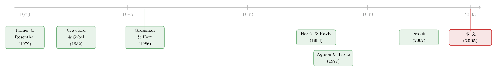

保留否决权的代价：老板一插手，下属就开始「虚报」预算
本文读的是 Marino & Matsusaka (2005, Review of Financial Studies)：当一位掌握私人信息、又偏爱「多花钱」的部门经理向 CEO 提交投资方案时，CEO 究竟该完全放权，还是保留一票否决？看似「否决权不要白不要」，可本文用一个简单的信号博弈说明——一旦经理担心被否，他就会把一个平庸项目的预算故意报大去冒充好项目，于是「保留否决权」反而可能让公司投得更糟。最优的选择，取决于这种「冒充」会不会真的发生。
1 一个看上去不该存在的难题
先从一个几乎是「常识」的判断说起。
假设你是 CEO，手下有个部门经理，他比你更了解一线，会替你物色项目、估算回报，然后递上一份要钱的方案。现在你要决定一套决策流程 (decision process)：是把拍板权完全交给他（放权 / 完全委托），还是自己留一道关——他提方案，你可以批、也可以一票否决（审批）？
直觉几乎是不假思索的：当然要留着否决权。留着它，最坏不过是「橡皮图章」，闭着眼睛照批，那跟完全放权一个样；可一旦你看出某个项目是烂项目，你还能把它毙掉。否决权是一项没有机会成本的权利——留着，上不封顶，下有保底。既然如此，哪个老板会主动把否决权交出去呢？
这正是 Marino 和 Matsusaka 在这篇论文里要拆穿的「常识」。他们的核心结论是反直觉的：
保留否决权是有代价的。这个代价不在你「否决」的那一刻，而在更早——当下属预判到自己可能被否，他递上来的那份方案本身就已经被扭曲了。
接着，一个自然的问题是：他会怎么扭曲？答案是本文最妙的地方——他会把预算往大里报。
这听起来更不对劲了。我们一向假设代理人「贪大求多」，老板对此心知肚明；可本文说，真正让经理睡不着觉的，恰恰是怕把方案报得太小。为什么？因为在审批制下，老板看不清项目好坏，只能从「你要多少钱」去倒推「这项目有多好」。于是一个手握平庸项目的经理，为了骗过老板那道关、让项目得以通过，会主动申请一笔过大的预算，把自己伪装成「我手里是个好项目」的样子。
这就是全文的那一个核心：委托人介入决策的代价，是诱使代理人战略性地虚报信息；而虚报的方向，是「往大了报」。后面所有的结论——什么时候该放权、什么时候该审批、为什么「门槛审批」更聪明、为什么「事前限额」有时反而会把开支越限越大——全都是从这一个机制里长出来的。
2 模型：把「老板和下属的分歧」压进一个参数
本文是一篇标准的理论模型论文，好在它的设定干净到可以一步步讲透。我们用 \(\theta\) 表示项目质量（论文正文用的就是这个符号），用 \(I\) 表示投资规模。
时序。 一共三期。第 0 期，委托人（principal，可理解为 CEO）选定并承诺一套决策流程；第 1 期，代理人（agent，部门经理）可能获得关于项目质量的信息，并提出一个出资额；第 2 期，委托人决定是否否决（除非已完全放权），通过则投资、项目兑现。这个「自下而上」的顺序很重要——它把议程控制 (agenda control) 天然地塞进了模型：是下属先出牌的。
信息。 项目质量 \(\theta\in\{H,L\}\)，\(H>L\)，\(P(\theta=H)=p\)，且记其无条件期望 \(E[\theta]\equiv M\)。代理人有信息优势：他以概率 \(\rho\) 知道真实质量，以概率 \(1-\rho\) 一无所知。于是代理人的信号 \(S\in\{L,M,H\}\)，其中 \(M\) 表示「我也不知道」。关键是，这条信息是软信息 (soft information)——无法被第三方核实，所以委托人不能简单地「请人来审计」（这正是本文区别于 Harris & Raviv 那一路的地方）。
收益与效用。 项目毛回报是 \(\theta f(I)\)，\(f\) 递增且严格凹、\(f(0)=0\)。委托人出钱、收现金流，单位成本归一化为 \(1\)，所以委托人效用是
$$ v = \theta f(I) - I. \tag{1} $$
代理人的效用则被设成
$$ u = v + aI, \qquad 0\le a<1. \tag{2} $$
这里 \(a\) 就是全文的「代理问题的严重程度」。它有两层含义：代理人在乎老板的效用（\(v\) 进了他的效用函数），但他额外从「把摊子铺大」本身得到好处（\(+aI\)）。把 (2) 代入 (1) 整理，得到一个特别清爽的形式：
$$ u = \theta f(I) - (1-a)\,I. \tag{3} $$
对比 (1) 和 (3) 你会发现：委托人和代理人只在一件事上不同——单位资金的私人机会成本。委托人花一块钱的成本是 \(1\)，代理人花一块钱的「自付成本」只有 \(1-a\)。下面这张图把这个唯一的楔子标了出来：
正因为 \(1-a<1\)，代理人总想要一个比老板更大的 \(I\)。但请注意一个常被忽略的细节：他想超投，却不是无限超投——凹函数 \(f\) 给了他一个有限的最优规模。
两方的「最优规模」。 给定信息 \(S\)，代理人的最优投资 \(I_S^{*}\) 满足一阶条件
$$ S\, f'(I_S^{*}) = 1-a, $$
而委托人若亲自做主，则会选 \(S f'(I)=1\)。前者因为分母更小，解出来的 \(I\) 更大——代理人永远想多投一点。\(I_S^{*}\) 关于 \(S\) 递增：项目越好，最优规模越大。
「不可妥协区」。 本文还设了一组关键假设，制造出真正有意思的冲突：委托人对 \(L\) 和 \(M\) 两种情形，无论投多少都亏（\(v_L<0,\ v_M<0\) 恒成立），只有 \(H\) 值得投（\(\max_I v_H>0\)）；而代理人则对 \(M\) 也想上、只对 \(L\) 死心（\(\max_I u_M>0,\ \max_I u_H>0\)，但 \(u_L<0\) 恒成立）。用边际产出写出来就是
$$ L f'(0) < 1-a < M f'(0) < 1 < H f'(0). $$
换句话说：当谁都不知道项目好坏（\(S=M\)）时，经理想干、老板想停。这就是分歧的引爆点。作者特别强调，正是这个「质量低到委托人在任何规模上都不愿出资」的不可妥协区 (no-compromise zone)，让本文的结论不同于 Dessein (2002) 那个「永远放权最优」的角解——这一点我们到文献脉络一节再细说。
3 两套流程的对决：放权 vs. 审批
现在把两套流程的收益算出来，对决就清楚了。
完全放权 (delegation)。 经理想投多大就投多大，老板不能干预。\(L\) 状态下他自己也不投（\(I_L^{*}=0\)），\(M\) 和 \(H\) 状态下分别投到 \(I_M^{*}\) 和 \(I_H^{*}\)。委托人第 0 期的期望效用是
$$ E_0[v\mid D] = (1-\rho)\,v_M(I_M^{*}) + \rho p\, v_H(I_H^{*}). \tag{4} $$
第一项是负的（\(M\) 状态老板本不想投，却被投了 \(I_M^{*}\)），第二项是正的（\(H\) 状态皆大欢喜）。这就是放权的病根：\(M\) 项目本该枪毙，却照样上马——投得太多。
审批 (approval)。 老板可以否。他会否掉什么？他会否掉那些他推断出经理其实没信息的方案。而没信息的经理（「\(M\) 型经理」）正是预判到了这一点——于是他可能去模仿 \(H\) 型经理，递上一份 \(H\) 型才会提的大方案 \(I_H^{*}\)，把自己藏进好项目里。到底模仿不模仿，取决于一个干净利落的条件：
- 混同均衡 (pooling)： 当 \(u_M(I_H^{*})>0\) 时，\(H\) 型与 \(M\) 型经理都提 \(I_H^{*}\)，老板只接受 \(I_H^{*}\)、否掉其余。也就是说，连「假装」都还有赚头时，\(M\) 型就会去假装。此时委托人的期望效用为
$$ E_0[v\mid A] = (1-\rho)\,v_M(I_H^{*}) + \rho p\, v_H(I_H^{*}). \tag{5} $$
- 分离均衡 (separating)： 当 \(u_M(I_H^{*})<0\) 时，假装的代价已经大到 \(M\) 型经理宁可不上项目，于是他自暴身份、提一个 \(I\neq I_H^{*}\) 的方案（被否），只有 \(H\) 型提 \(I_H^{*}\) 获批。此时
$$ E_0[v\mid A] = \rho p\, v_H(I_H^{*}). \tag{6} $$
把 (4)、(5)、(6) 摆在一起，反转就出现了：
命题 1。 当审批会导致混同（\(u_M(I_H^{*})>0\)）时，委托人偏好放权；当审批会导致分离（\(u_M(I_H^{*})<0\)）时，委托人偏好审批。
证明只需逐项相比。三种流程在 \(H\) 状态都给 \(I_H^{*}\)、在 \(L\) 状态都不投，差别只在 \(M\) 状态：
- 放权：\(M\) 项目上马，规模 \(I_M^{*}\)，委托人拿 \(v_M(I_M^{*})<0\)；
- 审批 + 混同：\(M\) 项目照样上马，而且规模更大（\(I_H^{*}>I_M^{*}\)），委托人拿 \(v_M(I_H^{*})\)，比放权还差；
- 审批 + 分离：\(M\) 项目不上马，委托人拿 \(0\)，这才是理想结果。
于是那句「否决权没有机会成本」彻底破产了。审批的好处是能毙掉一些老板不喜欢的项目；代价是会逼着经理把方案吹得更大。两者孰优，全看经理愿不愿意去吹这个牛——审批诱发分离时它更好，诱发混同时它反而更糟。
这里值得停一下，体会那个最反直觉的点：在混同均衡里，老板明知道经理是个爱花钱的主，可经理担心的偏偏是「方案报小了过不了关」。信息不对称把一个「贪多」的人，逼成了一个「虚报更多」的人。
4 从这一个机制，长出三组推论
抓住了「\(u_M(I_H^{*})\) 的正负决定一切」这把钥匙，剩下的结论几乎是顺理成章地掉出来的。
推论一：好项目用审批，烂熟的项目用放权。 \(H\) 升高（\(M\) 不变）会推高 \(I_H^{*}\)，从而压低 \(u_M(I_H^{*})\)——模仿一个「好得多」的项目，对 \(M\) 型经理太亏了，于是分离发生、审批变优。反过来，上行空间有限的「常规 (routine)」项目（比如老厂扩产），模仿成本低、容易混同，放权更好；而上行空间巨大的「创新 (innovative)」项目（比如新产品、新厂），适合审批。这恰好对上了现实里的观察：扩产决策常被下放给厂长，新产品上马则要报总部批。
推论二：代理问题缓和，未必让放权变得更好。 这条最反直觉。你可能以为 \(a\to0\)（经理越来越像老板）会让放权占优，但本文指出：缓和代理冲突可能反而让混同更容易发生——因为此时只需要一个更小的方案就能成功地把自己「混」过去。于是「让经理更顾全大局」这件好事，未必改善委托人的处境。
推论三：门槛审批，常常打败「一刀切」。 现实中最常见的是门槛审批 (threshold approval)：低于某金额的项目下放、超过的才报批（比如「100 万美元以上上总部」）。本文证明这种安排可以同时优于无条件放权和无条件审批——因为一个合理的门槛，会让 \(M\) 型经理觉得「为了过关而把方案报大」不划算，从而主动选择分离。决策权于是不再是「全交 / 全留」的开关，而是分片、有条件地切分。
还有一个漂亮的副产品：事前限额（ex ante 资本配给）的效果取决于它和谁搭配。在放权下，给投资上限永远会压低开支；但在审批下，给 \(H\) 项目设个天花板，会缩小 \(I_H^{*}\)、让「假装」变得更便宜，于是反而可能把开支越限越大。一句话：事前限额要和放权搭配才管用，配上审批可能适得其反。
把决策权当成「流程」而非「一纸权利」来看，议程控制的力量就显出来了——下属先出牌这件事本身，就足以让一个形式上权力很小的经理，实质性地左右最终结果。这层意思，和本博客另一篇把「抢预算」写成信号博弈的论文遥相呼应（参见《公司越大，吹牛的人越多——把「抢预算」写成一场信号博弈》）。而「经理偏爱某类项目、股东要设法约束」的视角，也可以和《老板为什么偏爱「说不清」的项目？》对照着读。
5 文献脉络
这篇论文坐落在一条关于「决策权该交给谁」的研究线上，而它的贡献，恰恰是给这条线补上了「资本预算」这块具体的拼图。
最早的两块地基来自别的领域。一块是 Romer & Rosenthal (1979) 对议程控制的洞察——谁先出牌，谁就能影响结局；另一块是 Crawford & Sobel (1982) 的策略性信息传递（cheap talk）模型，它奠定了「有私心的人如何选择性地透露信息」这一整套语言。接着，Grossman & Hart (1986) 的产权理论，把「谁拥有控制权」正式带进了组织经济学。

真正把「授权 (authority)」做成一个独立议题的，是 Aghion & Tirole (1997)：他们区分「形式权力」与「实际权力」，并点出保留干预权的一个代价——下属可能因此偷懒、少收集信息。本文明确地与之分工：Aghion–Tirole 担心的是「信息收集的努力」被削弱，本文担心的是已收集到的信息被战略性地扭曲。随后 Dessein (2002) 在 Crawford–Sobel 框架里得出一个强结论：除非代理问题极端到沟通彻底失效，否则放权永远优于审批。本文的可贵之处，正是打破了这个角解——靠的不是更复杂的信息结构（作者在附录里证明，换成 \(N\) 个离散状态或连续状态，结论照样成立），而是那个「不可妥协区」：现实中确有一些项目烂到委托人在任何规模上都不愿出资，而 Crawford–Sobel 模型里永远存在妥协空间，于是「永远放权」的结论才会成立。
另一条并行的支流是 Harris & Raviv (1996, 1998)，他们最早把资本预算实务理解为对代理与信息问题的解。但他们假设信息可被昂贵地审计、并诉诸显示原理 (Revelation Principle) 求解最优机制；本文则假设信息是软的、不可核实的，且经理无法承诺到「我们在现实里看不到的那些机制」上去——所以本文问的是一个被显示原理「绕开」的问题：到底由谁来拍板。在精神上，本文更接近 Gilligan & Krehbiel (1987, 1989, 1990) 对立法委员会的研究——同样把信息与议程控制并重。
6 评论与延伸（Q&A + 研究方向）
(a) 几个可能的疑问
Q：审批制下，老板看到一个大方案，难道不会反过来想「这家伙就是爱花钱」而打个折扣吗？
会，而且模型正是这么设的——老板是贝叶斯理性的，他知道经理的偏好。但问题在于，软信息让他无法把「真的是好项目」和「假装是好项目」分开。在混同均衡里，\(H\) 型和 \(M\) 型都提 \(I_H^{*}\)，两者在观测上完全无法区分，老板要么全批、要么全否；只要 \(v_R(I_H^{*})>0\)（在「非 \(L\)」的条件期望质量下接受 \(I_H^{*}\) 划算），他的最优反应就是照批。理性的折扣，挡不住无法分辨的伪装。
Q：这和「自由现金流导致过度投资」的 Jensen 故事是一回事吗？
不完全是。Jensen 讲的是经理手里有钱就乱花（参见《现金为什么一定要「还」出去？》）。本文里钱在委托人手里，经理要钱得打报告，冲突因此从「花不花」升级成「怎么报、谁来批」。过度投资在这里是信息博弈的均衡产物，而非现金充裕的直接后果。
Q：为什么不直接用最优机制设计（显示原理）一劳永逸？
因为本文关心的恰恰是显示原理会「抹掉」的那个问题。Harris & Raviv (2002) 自己也承认：若显示原理适用，最优规则会让双方充分且真实地沟通，「这时你就没法谈决策到底是在哪一层做出的」。本文（连同 Dessein、Harris–Raviv 2002）假设管理者无法承诺到现实中见不到的复杂机制上，只能在「放权 / 审批 / 门槛审批」这几种真实存在的流程里挑——这才让「谁拍板」成为一个有意义的问题。
Q：「缓和代理问题反而更糟」是不是模型的人为产物？
它确实依赖具体设定，但机制是稳健的：\(a\) 下降会同时改变 \(I_H^{*}\) 和 \(M\) 型经理模仿的得失。当 \(a\) 变小，成功混同所需的方案规模也变小，于是 \(u_M(I_H^{*})>0\)（混同）更容易成立。这不是符号巧合，而是「混同条件」对参数的真实比较静态——它提醒我们，激励对齐与信息揭示，是两个未必同向的目标。
Q：模型假设委托人完全不知情，现实里 CEO 多少懂一点，结论会不会垮？
作者在第 4 节专门做了「知情委托人」的扩展。直觉上，委托人越知情，越能直接甄别、越不依赖从方案规模去倒推质量，虚报的激励就被削弱——但这并不会让审批无条件占优，因为信息只是部分的。核心张力（介入诱发扭曲）依然在，只是强弱随委托人信息质量而变。
Q：这套结论能搬到「外资股东 vs. 本地管理层」这类场景吗？
在结构上可以类比：信息劣势的一方（远方的外资委托人）保留否决/介入权，可能诱使信息优势方（本地经理）扭曲上报的信息。但本文是纯理论，缺乏跨境制度的摩擦（语言、法律、汇率），直接搬运要小心。这反而指向一个有意思的实证方向（见下）。
(b) 几个可能的研究问题与提案
1. 门槛审批的实证检验：审批门槛是否随项目「上行空间」系统性变化？ 【经济故事】命题预测：上行空间越大（越「创新」）的项目，越该用审批、门槛越低；越常规的项目越该放权。如果能找到企业内部的授权额度表（authority matrix），就能检验门槛是否真的随项目波动性/创新度而变。 【可行性】中。难点在数据——授权额度多为内部文件；可考虑用并购/资本支出审批披露、或对特定行业（如制造业扩产 vs. 新产品）做对比。识别靠行业内项目类型的横截面差异。
2. 把「虚报预算」搬到信用市场：发债募集说明书里的「资金用途」是否被战略性地放大？ 【经济故事】本文的「往大里报」机制，在企业向外部债权人融资时同样成立——为了过审/获评级，发行人可能高报项目规模或前景。若债权人保留某种「否决」（covenant、规模限制），是否反而诱发更激进的募集规模？ 【可行性】中。可用公司债募集说明书文本（用途、规模）配合事后实际投资、违约数据。识别需处理「需求确实大」与「战略虚报」的分离，可借募集规模相对历史/同行的异常度作为代理。与本博客流动性/信用市场关切高度契合。
3. 外资委托人与本地经理的「介入—扭曲」张力。 【经济故事】信息劣势的外资股东若保留更强的董事会否决权，按本文逻辑可能诱使本地管理层扭曲上报信息，导致投资规模系统性偏离。这给「外资是不是更难监督」提供了一个信息博弈的微观基础。 【可行性】中偏低。需跨国公司治理 + 投资项目层面数据，识别困难（外资持股内生）。可借鉴跨境治理的自然实验（如指数纳入、可投资度变化）。是有意思但 doable 性存疑的方向。
4. 实验室检验「缓和代理问题反而更糟」。 【经济故事】命题二是纯理论的反直觉预测，最适合实验室。把 \(a\) 作为处理变量，观察当代理人偏好向委托人靠拢时，混同是否真的更频繁出现、委托人福利是否反而下降。 【可行性】高。标准的信号博弈实验设计，参数可控、机制清晰，是检验该反直觉比较静态最干净的途径。
7 我的判断
这篇文章的贡献，在于把一个被「永远放权」结论垄断了的理论问题，拉回了现实的地面。它的关键不是更花哨的数学，而是一个朴素到容易被忽略的设定——有些项目烂到不可妥协。就这一点改变，整条结论的符号全翻了过来：否决权不再免费，放权与审批各有其位，而现实中无处不在的「门槛审批」第一次得到了清晰的理论支撑。更难得的是，它给出的预测是可证伪的（创新项目用审批、常规项目用放权；缓和代理未必改善放权；事前限额配审批可能适得其反），不像许多授权模型那样停在抽象层面。
对它的保留，主要在于这是一个高度风格化的模型，几处设定撑着全部结论：经理的效用被压成一个线性楔子 \(a\)、信息只有三态、委托人能完全承诺到某套流程（作者自己也承认现实中很难做到，只能诉诸声誉或重复博弈）。其中「承诺」这一条最让我犹豫——如果老板事后总能反悔，混同与分离的边界就会松动。此外，全文没有任何数据，所有「实务对照」都停留在引述 Bower (1970)、Ross (1986) 这类调查文献的层面。
我接下来最想看到的，是有人把这套「介入诱发虚报」的机制带到数据里去——无论是企业内部授权额度表，还是债券募集说明书里的「资金用途」。本文给了一个干净的、可检验的预测：当委托人越想保留控制，信息优势方就越有动机把方案吹大。这句话能不能在真实的预算或募资数据里留下指纹，才是它从一个漂亮模型走向一个被相信的事实的分水岭。
参考文献
- Aghion, P., and J. Tirole (1997). Formal and Real Authority in Organizations. Journal of Political Economy 105(1), 1–29.
- Bernardo, A., H. Cai, and J. Luo (2002). Capital Budgeting and Compensation with Asymmetric Information and Moral Hazard. Journal of Financial Economics 61, 311–344.
- Bower, J. (1970). Managing the Resource Allocation Process: A Study of Corporate Planning and Investment. Harvard University, Graduate School of Business Administration.
- Crawford, V., and J. Sobel (1982). Strategic Information Transmission. Econometrica 50(6), 1431–1451.
- Dessein, W. (2002). Authority and Communication in Organizations. Review of Economic Studies 69(4), 811–838.
- Gilligan, T., and K. Krehbiel (1987). Collective Decisionmaking and Standing Committees: An Informational Rationale for Restrictive Amendment Procedures. Journal of Law, Economics, and Organization 3, 287–335.
- Grossman, S., and O. Hart (1986). The Costs and Benefits of Ownership: A Theory of Vertical and Lateral Integration. Journal of Political Economy 94(4), 691–719.
- Harris, M., and A. Raviv (1996). The Capital Budgeting Process, Incentives and Information. Journal of Finance 51(4), 1139–1174.
- Harris, M., and A. Raviv (1998). Capital Budgeting and Delegation. Journal of Financial Economics 50(3), 259–289.
- Harris, M., and A. Raviv (2002). Allocation of Decision-Making Authority. Working paper, University of Chicago.
- Marino, A. M., and J. G. Matsusaka (2005). Decision Processes, Agency Problems, and Information: An Economic Analysis of Capital Budgeting Procedures. Review of Financial Studies 18(1), 301–325.
- Romer, T., and H. Rosenthal (1979). Bureaucrats Versus Voters: On the Political Economy of Resource Allocation by Direct Democracy. Quarterly Journal of Economics 93(4), 563–587.